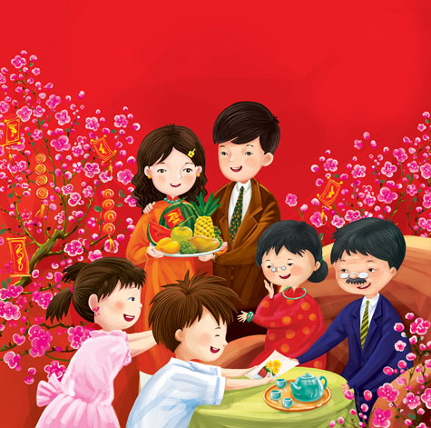
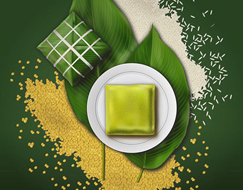
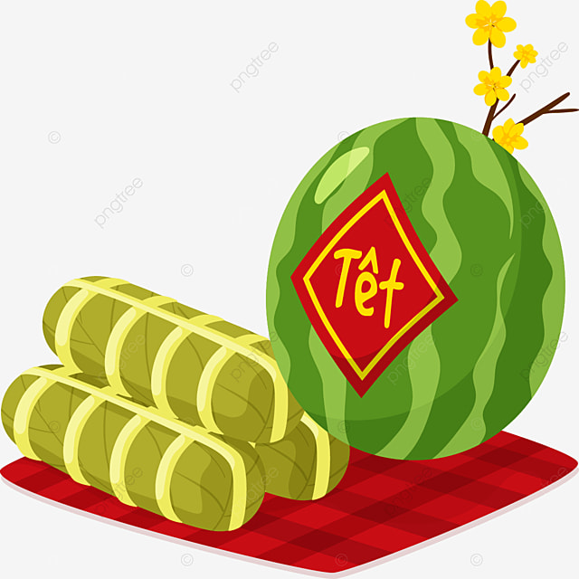
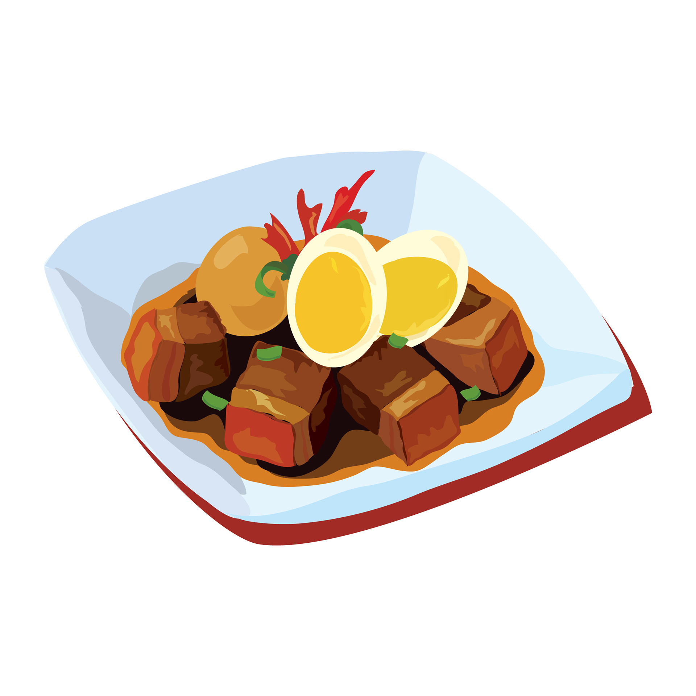

What is the Tet holiday?
Tet is short for “Tet Nguyen Dan” which literally translates as “The Feast of the First Morning of the First Day.” There are three notable components to this date: it marks the beginning of the New Lunar Year, the start of spring, and the official birthday of everyone in Vietnam.
Lucky money
Traditionally, Lucky Money is a small amount of money put in a red envelope then is given to children as a wish of luck and everything good will come to them in the lunar new year.
.jpeg)
Banh Chung (Vietnamese Square Sticky rice cake)
This cake represents gratitude to the ancestors, the earth, and the sky. Also, it emphasizes the important role of rice and nature in Vietnamese culture. The harmonious combination of sticky rice, sweet green beans, mildly spicy pepper, and fatty pork meat has created a remarkable New Year’s taste.
Banh Tet
Banh Tet is quite similar to Banh Chung except for the shape. Although they have the same ingredients, Banh Tet is packed into cylindrical beams. There are two types of Banh Tet: sweet and savory. With the savory type, the filling has traditional beans, fatty pork, salted eggs, and sometimes sausage. Sweet Banh Tet is popular with bananas, red beans, and green beans as the fillings. They’re great choices if you’re vegetarian.
Thit Kho Trung (Vietnamese Braised Pork with Eggs)
On Tet Holiday, in addition to Banh Chung and Banh Tet, people often prepare a large pot of braised pork in coconut juice with eggs – Thịt Kho trứng. The braised pork is soft but not mushy, and the duck eggs are soaked with spices. This dish is not too complicated to make but very delicious, suitable for the bustling atmosphere of New Year’s Day.
